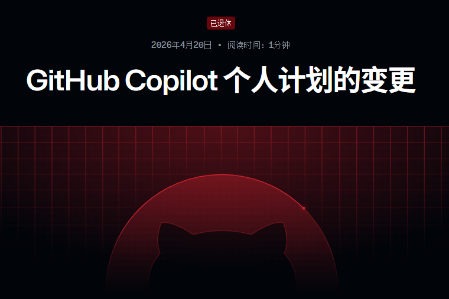

奶昔🥤
@realNyarime
GitHub Copilot 调整个人计划
1）暂停 Pro、Pro+ 和 Student（学生）计划的新用户注册，Copilot Free（免费版）仍然开放新用户注册
2）现有用户仍然可以在不同的计划之间进行升级，从 Pro 计划中移除 Opus 模型，Opus 4.5 和 4.6 模型也将从 Pro+ 计划中移除
3）选择取消 Pro 或 Pro+ 的订阅，GitHub 将免除您 4 月份的使用费，仅限在 4 月 20 日至 5 月 20 日期间向 GitHub 客户支持部门申请退款
